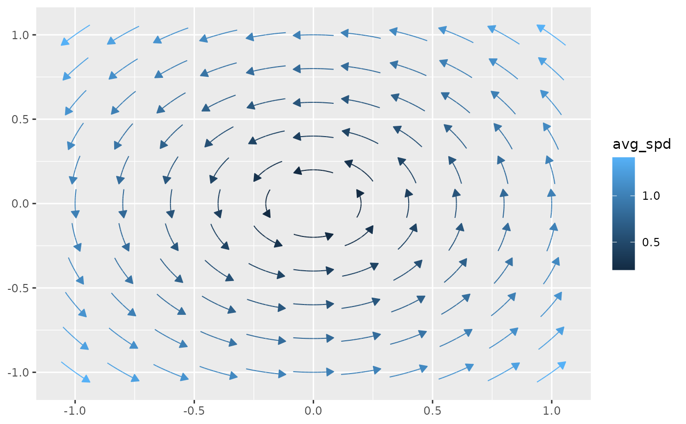

geom_stream_field() creates a ggplot2 layer that integrates a user-defined
vector field function \(f(x, y) \to (dx, dy)\) over a grid of seed points
within a specified domain. The function numerically integrates the field
starting from these seeds, producing streamlines that visualize the flow.
This is useful for visualizing vector fields, flow patterns, or trajectories,
such as in fluid dynamics or gradient fields.
Usage
geom_stream_field(
mapping = NULL,
data = NULL,
stat = StatStreamField,
position = "identity",
...,
na.rm = FALSE,
show.legend = NA,
inherit.aes = FALSE,
fun,
xlim = NULL,
ylim = NULL,
n = 11,
args = list(),
max_it = 1000L,
tol = sqrt(.Machine$double.eps),
T = NULL,
L = NULL,
center = TRUE,
type = "stream",
normalize = TRUE,
tail_point = FALSE,
eval_point = FALSE,
grid = NULL,
method = "rk4",
lineend = "butt",
linejoin = "round",
linemitre = 10,
arrow = grid::arrow(angle = 30, length = unit(0.02, "npc"), type = "closed")
)
stat_stream_field(
mapping = NULL,
data = NULL,
geom = GeomStream,
position = "identity",
...,
na.rm = FALSE,
show.legend = NA,
inherit.aes = TRUE,
fun,
xlim = NULL,
ylim = NULL,
n = 11,
args = list(),
max_it = 1000,
tol = sqrt(.Machine$double.eps),
T = NULL,
L = NULL,
center = TRUE,
type = "stream",
normalize = TRUE,
tail_point = FALSE,
eval_point = FALSE,
grid = NULL,
method = "rk4",
lineend = "butt",
linejoin = "round",
linemitre = 10,
arrow = grid::arrow(angle = 30, length = unit(0.02, "npc"), type = "closed")
)
geom_stream_field2(
mapping = NULL,
data = NULL,
stat = StatStreamField,
position = "identity",
...,
na.rm = FALSE,
show.legend = NA,
inherit.aes = FALSE,
fun,
xlim = NULL,
ylim = NULL,
n = 11,
args = list(),
max_it = 1000,
tol = sqrt(.Machine$double.eps),
L = NULL,
center = FALSE,
type = "stream",
tail_point = TRUE,
eval_point = FALSE,
grid = NULL,
lineend = "butt",
linejoin = "round",
linemitre = 10,
method = "rk4"
)
stat_stream_field2(
mapping = NULL,
data = NULL,
geom = GeomStream,
position = "identity",
...,
na.rm = FALSE,
show.legend = NA,
inherit.aes = FALSE,
fun,
xlim = NULL,
ylim = NULL,
n = 11,
args = list(),
max_it = 1000,
tol = sqrt(.Machine$double.eps),
L = NULL,
center = FALSE,
type = "stream",
tail_point = TRUE,
eval_point = FALSE,
grid = NULL,
lineend = "butt",
linejoin = "round",
linemitre = 10,
method = "rk4"
)Arguments
- mapping
A set of aesthetic mappings created by
ggplot2::aes(). (Optional)- data
A data frame or other object, as in
ggplot2::layer(). (Optional)- stat
The statistical transformation to use on the data (default: StatStreamField).
- position
Position adjustment, either as a string or the result of a position adjustment function.
- ...
Other arguments passed to
ggplot2::layer()and the underlying geometry/stat.- na.rm
Logical. If
FALSE(the default), missing values are removed with a warning. IfTRUE, missing values are silently removed.- show.legend
Logical. Should this layer be included in the legends?
- inherit.aes
Logical. If
FALSE, overrides the default aesthetics rather than combining with them.- fun
A function of two variables,
fun(x, y), returning a two-element vector \((dx, dy)\) that defines the local flow direction at any point.- xlim
Numeric vector of length 2 specifying the domain limits in the \(x\)-direction. Defaults to \(c(-1, 1)\).
- ylim
Numeric vector of length 2 specifying the domain limits in the \(y\)-direction. Defaults to \(c(-1, 1)\).
- n
Integer or two-element numeric vector specifying the grid resolution (number of seed points) along each axis. Defaults to
11, producing an \(11 \times 11\) grid.- args
A list of additional arguments passed to
fun.- max_it
integer(1); Maximum number of integration steps per streamline (default:1000L).- tol
numeric(1); a tolerance used to determine if a sink has been hit, among other things (default:sqrt(.Machine$double.eps)).- T
Numeric. When
normalize = FALSE, each streamline is integrated for a fixed timeTbefore being cropped to match the duration of the fastest streamline reaching the arc lengthL. Whennormalize = TRUE, integration instead stops when the cumulative arc length reachesL, and the parameterTis ignored.- L
Numeric. Maximum arc length for each streamline. When
normalize = TRUE, integration stops once the cumulative arc length reachesL. Whennormalize = FALSE, streamlines are initially computed for a fixed timeTand then cropped so that all are truncated to the duration it takes the fastest streamline to reach the arc lengthL. Defaults toNULL(a suitable default is computed from the grid spacing).- center
Logical. If
TRUE(default), centers the seed points (or resulting streamlines) so that the original (x, y) becomes the midpoint.- type
Character. Either
"stream"(default) or"vector"."stream"computes a full streamline by integrating in both directions (ifcenter = TRUE), while"vector"computes a single vector.- normalize
Logical. When
normalize = TRUE(the default), each streamline is integrated until its cumulative arc length reaches the specified valueL, ensuring that all streams have a uniform, normalized length based on grid spacing. Whennormalize = FALSE, the integration runs for a fixed time (T), and afterward, all streamlines are cropped to the duration it takes for the fastest one to reach the lengthL, allowing for variations in arc lengths that reflect differences in flow speeds.- tail_point
Logical. If
TRUE, draws a point at the tail (starting point) of each streamline. Defaults toFALSE.- eval_point
Logical. If
TRUE, draws a point at the evaluation point where the field was computed. Defaults toFALSE.- grid
A data frame containing precomputed grid points for seed placement. If
NULL(default), a regular Cartesian grid is generated based onxlim,ylim, andn.- method
Character. Integration method (e.g.
"rk4"for Runge-Kutta 4,"euler"for Euler's method). Defaults to"rk4".- lineend
Line end style (round, butt, square).
- linejoin
Line join style (round, mitre, bevel).
- linemitre
Line mitre limit (number greater than 1).
- arrow
A
grid::arrow()specification for adding arrowheads to the streamlines. Defaults to a closed arrow with a 30° angle and length0.02npc.- geom
The geometric object used to render the streamlines (defaults to GeomStream).
Aesthetics
geom_stream_field() (and its stat variant) inherit
aesthetics from GeomStream and understand the following:
x: x-coordinate of the seed point.y: y-coordinate of the seed point.color: Color, typically used to represent computed statistics (e.g. average speed).linetype: Type of line used to draw the streamlines.linewidth: Thickness of the streamlines.alpha: Transparency of the streamlines.
Details
The streamlines are generated by numerically integrating
the vector field defined by fun(x, y). When normalize = TRUE,
integration stops once the cumulative arc length reaches L; otherwise,
integration runs until time T is reached. If both T and L are
provided in incompatible combinations, one parameter is ignored. The
computed paths are rendered by GeomStream.
Computed Variables
The following variables are computed internally by StatStreamField during the integration of the vector field:
- avg_spd
For vector fields, this is computed as the total arc length divided by the integration time, providing an estimate of the average speed. It is used to scale the vector lengths when mapping
length = after_stat(norm).- t
The integration time at each computed point along a streamline.
- d
The distance between consecutive points along the computed path.
- l
The cumulative arc length along the streamline, calculated as the cumulative sum of
d.
Examples
f <- function(u) c(-u[2], u[1])
# the basic usage involves providing a fun, xlim, and ylim
ggplot() + geom_stream_field(fun = f, xlim = c(-1,1), ylim = c(-1,1))

if (FALSE) { # \dontrun{
# if unspecified, xlim and ylim default to c(-1,1). we use this in what
# follows to focus on other parts of the code
ggplot() + geom_stream_field(fun = f)
ggplot() + geom_stream_field(fun = f, center = FALSE)
ggplot() + geom_stream_field(fun = f, normalize = FALSE)
ggplot() + geom_stream_field(fun = f, normalize = FALSE, center = FALSE)
# run systems until specified lengths
ggplot() + geom_stream_field(fun = f, normalize = TRUE, L = .8)
ggplot() + geom_vector_field(fun = f, normalize = TRUE, L = .3)
ggplot() + geom_vector_field(fun = f, normalize = FALSE, L = 2)
# run systems for specified times
ggplot() + geom_stream_field(fun = f, normalize = FALSE, T = .1)
# tail and eval points
ggplot() + geom_stream_field(fun = f, tail_point = TRUE)
ggplot() + geom_stream_field(fun = f, eval_point = TRUE)
# changing the grid of evaluation
ggplot() + geom_stream_field(fun = f)
ggplot() + geom_stream_field(fun = f, grid = "hex")
ggplot() + geom_stream_field(fun = f, grid = "hex", n = 5)
ggplot() + geom_stream_field(fun = f, n = 5)
ggplot() + geom_stream_field(fun = f, xlim = c(-5, 5)) + coord_equal()
ggplot() + geom_stream_field(fun = f, xlim = c(-5, 5), n = c(21, 11)) + coord_equal()
ggplot() + geom_stream_field(fun = f)
ggplot() + geom_stream_field(fun = f, grid = grid_hex(c(-1,1), c(-1,1), .2))
# using other ggplot2 tools
f <- efield_maker()
ggplot() + geom_stream_field(fun = f, xlim = c(-2,2), ylim = c(-2,2))
ggplot() +
geom_stream_field(fun = f, xlim = c(-2,2), ylim = c(-2,2)) +
scale_color_viridis_c(trans = "log10")
ggplot() +
geom_stream_field(fun = f, xlim = c(-2,2), ylim = c(-2,2)) +
scale_color_viridis_c(trans = "log10") +
coord_equal()
# other vector fields
f <- function(u) u
ggplot() + geom_stream_field(fun = f, xlim = c(-1,1), ylim = c(-1,1))
f <- function(u) c(2,1)
ggplot() + geom_stream_field(fun = f, xlim = c(-1,1), ylim = c(-1,1))
# neat examples
f <- function(u) {
x <- u[1]; y <- u[2]
c(y, y*(-x^2 - 2*y^2 + 1) - x)
}
ggplot() + geom_stream_field(fun = f, xlim = c(-2,2), ylim = c(-2,2))
ggplot() + geom_stream_field(fun = f, xlim = c(-2,2), ylim = c(-2,2), type = "vector")
f <- function(u) {
x <- u[1]; y <- u[2]
c(y, x - x^3)
}
ggplot() + geom_stream_field(fun = f, xlim = c(-2,2), ylim = c(-2,2))
ggplot() + geom_stream_field(fun = f, xlim = c(-2,2), ylim = c(-2,2),
grid = grid_hex(c(-2,2), c(-2,2), .35))
f <- function(u) {
x <- u[1]; y <- u[2]
c(x^2 - y^2, x^2 + y^2 - 2)
}
ggplot() + geom_stream_field(fun = f, xlim = c(-2,2), ylim = c(-2,2))
ggplot() + geom_stream_field(fun = f, xlim = c(-2,2), ylim = c(-2,2),
grid = grid_hex(c(-2,2), c(-2,2), .35))
ggplot() +
geom_stream_field(fun = f, aes(alpha = after_stat(t)), xlim = c(-2,2), ylim = c(-2,2)) +
scale_alpha(range = c(0,1))
ggplot() +
geom_stream_field(
fun = f, xlim = c(-1,1), ylim = c(-1,1),
linewidth = .75, arrow = arrow(length = unit(0.015, "npc"))
)
} # }